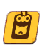

버프
아이콘
명칭
설명
공격력 증가
공격력 증가.
체력 증가
체력(HP) 증가.
방어력 증가
방어력 증가.
치유력 증가
치유력 증가.
명중 증가
명중 증가.
회피 증가
회피 증가.
치명 수치 증가
치명 수치 증가.
치명 수치 저항 증가
치명 수치 저항 증가.
치명 대미지 증가
치명 대미지 증가.
치명 대미지 저항 증가
치명 대미지 저항 증가.
사거리 증가
사거리 증가.
군중 제어 강화력 증가
주는 군중 제어(CC) 확률 또는 지속시간 증가.
군중 제어 저항력 증가
받는 군중 제어(CC) 확률 감소.
받는 회복 효과 강화
대상이 받는 회복 효과 강화.
공격 속도 증가
공격 속도 증가.
공격 준비, 공격, 공격 딜레이, 재장전 속도에 영향을 주며, 스킬로 인한 행동에는 영향 없다.
공격 준비, 공격, 공격 딜레이, 재장전 속도에 영향을 주며, 스킬로 인한 행동에는 영향 없다.
이동 속도 증가
이동 속도 증가.
안정 수치 증가
안정 수치 증가.
장탄수 증가
장탄수 증가.
코스트 회복력 증가
코스트 회복력 증가.
블락 성공률 증가
블락 성공률 증가.
방어 관통 수치 증가
방어 관통 수치 증가.
이로운 효과 유지력 증가
버프(빨간색 아이콘) 지속시간 증가.
해로운 효과 유지력 증가
디버프(파란색 아이콘) 지속시간 증가.
군중 제어 효과 유지력 증가
군중 제어(CC, 보라색 아이콘) 지속시간 증가.
집중 공격
지정된 적에게 아군의 기본 공격 및 공격 스킬의 타겟이 고정. EX 스킬은 해당 없음.
코스트 감소
EX 스킬 사용 시 필요한 코스트 감소.
추가 소모 코스트 감소
EX 스킬 중, 코스트를 추가로 소모하는 효과를 가진 EX 스킬의 추가된 코스트 감소.
코스트 오버
코스트를 최대 5까지 초과하여 소비 가능. 초과분은 마이너스로 계산.
EX 스킬 대미지 증가
EX 스킬로 가하는 대미지 증가.
가하는 피해 증가
가하는 모든 대미지 증가.
받는 피해 감소
받는 모든 대미지 감소.
보호막
보호막 적용.
피격시 회복
대미지 피격 시, 치유력에 비례해 회복.
기본기 숙련
일반 공격, 기본 스킬, 서브 스킬로 가하는 대미지 증가.
폭발 특효 강화
폭발 특효 강화.
관통 특효 강화
관통 특효 강화.
신비 특효 강화
신비 특효 강화.
진동 특효 강화
진동 특효 강화.
구호의 마음가짐
미네 전용.
보유 시 지속 회복, 해제 시 주변에 대미지 및 방어력, 회피 감소.
보유 시 지속 회복, 해제 시 주변에 대미지 및 방어력, 회피 감소.
디버프
아이콘
명칭
설명
공격력 감소
공격력 감소.
체력 감소
체력(HP) 감소.
방어력 감소
방어력 감소.
명중 감소
명중 감소.
회피 감소
회피 감소.
치명 수치 감소
치명 수치 감소.
치명 수치 저항 감소
치명 수치 저항 감소.
치명 대미지 감소
치명 대미지 감소.
치명 대미지 저항 감소
치명 대미지 저항 감소.
사거리 감소
사거리 감소.
군중 제어 저항력 감소
받는 군중 제어(CC) 확률 증가.
받는 회복률 감소
받는 회복량 감소.
공격 속도 감소
공격 속도 감소.
공격 준비, 공격, 공격 딜레이, 재장전 속도에 영향을 주며, 스킬로 인한 행동에는 영향 없다.
공격 준비, 공격, 공격 딜레이, 재장전 속도에 영향을 주며, 스킬로 인한 행동에는 영향 없다.
이동 속도 감소
이동 속도 감소.
안정 수치 감소
안정 수치 감소.
코스트 회복력 감소
코스트 회복력 감소.
받는 피해 증가
받는 모든 대미지 증가.
집중 공격
지정된 아군에게 적의 기본 공격 및 공격 스킬의 타겟이 고정. EX 스킬은 해당 없음.
약점 파악
1회 피격 시 1회의 추가 대미지.
화상
화상 상태 부여 및 지속 대미지.
중독
중독 상태 부여 및 지속 대미지.
오한
오한 상태 부여 및 지속 대미지.
오한 대미지 증가
오한 상태일 때 대미지량 증가.
감전
감전 상태 부여 및 지속 대미지.
응원의 열기
히비키(응원단) 전용.
응원의 열기 상태 부여 및 지속 대미지.
응원의 열기 상태 부여 및 지속 대미지.
저주
예로니무스 전용.
지속 대미지 부여 및 일정 시간 후 폭발하여 대미지. 대상의 체력이 100% 도달 시 해제.
지속 대미지 부여 및 일정 시간 후 폭발하여 대미지. 대상의 체력이 100% 도달 시 해제.
군중 제어
아이콘
명칭
설명
도발
스킬 사용자에게 강제적으로 집중 공격을 유발. EX 스킬을 비롯한 스킬을 사용할 수 없으며, 시전중이던 스킬은 중단된다.
기절
이동 및 공격 불가. 시전중이던 스킬은 중단된다.
공포
이동 및 공격이 불가능해지며, 스킬 사용자의 반대 방향으로 도망친다. 시전중이던 스킬은 중단된다.
혼란
가까운 아군을 공격한다. 일반 공격만 가능하며, 아군이 없을 경우 적을 공격한다. 시전중이던 스킬은 중단된다.
침묵
EX 스킬 및 기본 스킬 사용 불가.
감전
이동 및 공격 불가. 시전중이던 스킬은 중단된다.
특수
아이콘
명칭
설명
분노
네루 전용.
분노 상태일 때 회피 및 공격력 증가.
분노 상태일 때 회피 및 공격력 증가.
불사신
체력을 초과하는 대미지를 받아도 후퇴하지 않는다.
에너지 충전 0단계
아리스 전용.
단계에 따라 EX 스킬 강화.
단계에 따라 EX 스킬 강화.
에너지 충전 1단계
아리스 전용.
단계에 따라 EX 스킬 강화.
단계에 따라 EX 스킬 강화.
에너지 충전 2단계
아리스 전용.
단계에 따라 EX 스킬 강화.
단계에 따라 EX 스킬 강화.
대미지 축적
지속 시간 동안 받은 대미지를 축적하여, 지속 시간 후 추가 대미지.
악행
아루(새해) 전용.
EX 스킬 사용 시, 스택 보유 수만큼 코스트 획득.
EX 스킬 사용 시, 스택 보유 수만큼 코스트 획득.
소악마
무츠키(새해) 전용.
스택 당 치명 대미지 증가 및 기본 스킬 사용시 추가 대미지.
스택 당 치명 대미지 증가 및 기본 스킬 사용시 추가 대미지.

부적
카요코(새해) 전용.
서브 스킬 발동 시, 부적이 부여된 아군에게 신비 특효 가산.
서브 스킬 발동 시, 부적이 부여된 아군에게 신비 특효 가산.
칭찬 도장
코코나 전용.
일정량 획득 시 모든 아군의 EX 코스트 1 감소.
일정량 획득 시 모든 아군의 EX 코스트 1 감소.
성야의 축복
세리나(크리스마스), 하나에(크리스마스) 전용.
스택 당 EX 스킬의 효과 강화.
스택 당 EX 스킬의 효과 강화.
세례의 증표
사쿠라코 전용.
일반 공격 시 추가 대미지.
일반 공격 시 추가 대미지.
아비 에슈흐 게이지
토키 전용.
아비 에슈흐 모드 진입 시, 남은 EX 스킬 횟수 표시.
아비 에슈흐 모드 진입 시, 남은 EX 스킬 횟수 표시.
명경지수
카호 전용.
공격 시 추가 대미지.
공격 시 추가 대미지.
실마리
우이(수영복) 전용.
일정량 도달 시, 관통 특효 가산.
일정량 도달 시, 관통 특효 가산.
드릴
카스미 전용.
일정량 도달 시, EX 스킬에 추가 대미지.
일정량 도달 시, EX 스킬에 추가 대미지.
기원
유카리 전용.
일정량 도달 시마다, EX 스킬에 확정 치명 대미지 추가.
일정량 도달 시마다, EX 스킬에 확정 치명 대미지 추가.
열정
렌게 전용.
공격 시 추가 대미지.
공격 시 추가 대미지.
풍림화산
키쿄 전용.
일정량 도달 시, 아군의 EX 코스트 감소.
일정량 도달 시, 아군의 EX 코스트 감소.
따끈한 군고구마
하레(캠핑) 전용.
공격 시, 보유량 만큼 추가 대미지.
공격 시, 보유량 만큼 추가 대미지.
경호 성공
아코(드레스) 전용.
공격력 증가 및 기본 스킬 대미지 증가.
공격력 증가 및 기본 스킬 대미지 증가.
잠입 행동
카요코(드레스) 전용.
전투 진입 시 부여 및 피격 시 해제. 보유 시 치명 대미지 증가 및 EX 스킬을 확정 치명으로 변경
전투 진입 시 부여 및 피격 시 해제. 보유 시 치명 대미지 증가 및 EX 스킬을 확정 치명으로 변경
슈가러시
아이리(밴드), 나츠(밴드), 카즈사(밴드), 요시미(밴드) 전용.
보유량에 따라 스킬 강화.
보유량에 따라 스킬 강화.
리듬 업
나츠(밴드) 전용.
일정량의 슈가러시 보유 시 획득. 공격 시 확률적으로 보유량에 따라 적 공격력 감소.
일정량의 슈가러시 보유 시 획득. 공격 시 확률적으로 보유량에 따라 적 공격력 감소.
방탄 플레이트
호시노(무장)(방어형) 전용.
보유 시 받는 대미지량 감소. 25회 피격 시 해제.
보유 시 받는 대미지량 감소. 25회 피격 시 해제.
제압 사격
호시노(무장)(공격형) 전용.
EX 스킬 및 기본 스킬 사용 후, 첫 일반 공격을 부채꼴 범위로 전환.
EX 스킬 및 기본 스킬 사용 후, 첫 일반 공격을 부채꼴 범위로 전환.
퇴각 유예
시로코*테러 전용.
현재 체력을 초과하는 대미지를 받을 경우, 후퇴하지 않고 생존. 지속 시간 동안 체력을 100% 회복하지 못할 경우 퇴각.
현재 체력을 초과하는 대미지를 받을 경우, 후퇴하지 않고 생존. 지속 시간 동안 체력을 100% 회복하지 못할 경우 퇴각.
전단지
토모에(치파오) 전용.
아군 전체의 보유량에 따라, 공격력이 가장 높은 아군의 공격력 증가.
아군 전체의 보유량에 따라, 공격력이 가장 높은 아군의 공격력 증가.
지속 대미지 강화(오한)
레이죠 전용.
적용 시 오한 대미지 강화.
적용 시 오한 대미지 강화.
지속 대미지 강화(중독)
레이죠 전용.
적용 시 중독 대미지 강화.
적용 시 중독 대미지 강화.
팬서비스
마리(아이돌) 전용.
일정량 보유 시, 아군의 EX 코스트 감소.
일정량 보유 시, 아군의 EX 코스트 감소.
응원봉
미네(아이돌) 전용.
보유량에 따라, 대상에게 대미지 및 공격력 감소.
보유량에 따라, 대상에게 대미지 및 공격력 감소.